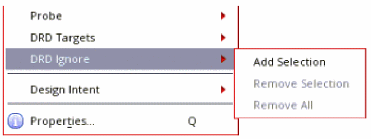

2
DRD Advanced Features
You can use the following DRD advanced features to create DRC-correct layouts more efficiently:
- DRD Targets
- Targeted Enforce
- Relaxed Enforce
- Deferred Post Edit
- What-if Halos
- DRD Smart Snapping
- Incremental Violation Display
- Excluding Instances from Checking
These features can be used with flat shapes located at the current level of layout hierarchy, as well as with shapes located in hierarchical and pseudo-hierarchical layout objects such as instances, vias, and groups (figGroups).
DRD Targets
DRD targets are designated layout objects used by advanced DRD features such as Targeted Enforce and What-if Halos. To use a layout object with any of these features, you must first set it as a DRD Target. This section explains how layout objects are set as DRD targets.
Setting DRD Targets
To set an object as a DRD target, you can either select it in the canvas and choose a DRD Targets menu option or use the bindkey provided. Selection works only for top-level objects; the bindkey can be used to set any object as a DRD target, including the objects below the top level in the hierarchy.
Setting DRD Targets by Selection
To set one or more objects as DRD targets, you must first select the required objects in the canvas, as shown.
After you have selected the objects, you can either set the selected objects as new DRD targets or add them to an existing set of DRD targets.
-
To set only the selected objects as DRD targets, right-click the selected objects and choose DRD Targets – Set Targets from Selection from the context menu.
Alternatively, choose Edit – DRD Targets – Set Targets from Selection.
The selected objects are set as DRD targets, as shown:
-
Right-click the selected objects and choose DRD Targets – Add Selection to Targets from the context menu if you want to add the selected objects to an existing set of DRD targets.
Alternatively, choose Edit – DRD Targets – Add Selection to Targets.
Setting DRD Targets Using the Bindkey
You can use the / (forward-slash) key on the numeric keypad to set objects as DRD targets. Place the mouse pointer on an object and press / to set it as a DRD target, as shown.
To set multiple objects as DRD targets with the bindkey, select them one by one, as shown.
NumLock key and press the / key on the numeric keypad.You can also use the bindkey to set as DRD targets the following objects: objects below the current hierarchy level and overlapping objects at any hierarchy level.
Setting Hierarchical Objects as DRD Targets
You can set objects below the current hierarchy level as DRD targets as follows:
- Open the DRD Options form.
-
On the Interactive tab, set the Hierarchy Range to current to bottom, as shown.
- Place the mouse pointer over the hierarchical object that you want to set as a DRD target.
-
Press
/on the numeric keypad.
Setting Overlapping Objects as DRD Targets
To set an overlapping object as a DRD target, set the layer containing that object as the active layer. In the following example, the objects on the Poly (green) and Oxide (hashed red) layers overlap.
To set an object on the Poly layer as a DRD target:
-
In the Palette, select Poly as the active layer, as shown.

- Place the mouse pointer over the object you want to set as a DRD target.
-
Press
/on the numeric keypad. The Poly gate is successfully set as a DRD target, as shown in the figure on the right.
Unsetting DRD Targets
You can unset a DRD target by using the DRD Targets menu options or by using the bindkey provided.
Unsetting DRD Targets by Selection
To unset specific DRD targets, right-click the DRD targets and choose DRD Targets – Remove Selection from Targets from the context menu. Alternatively, you can select those DRD targets in the canvas and choose Edit – DRD Targets – Remove Selection from Targets.
To unset all existing DRD targets, right-click on the canvas and choose DRD Targets – Clear Targets from the context menu or choose Edit – DRD Targets – Clear Targets, as shown.
Unsetting DRD Targets Using the Bindkey
You can use the * (asterisk) key on the numeric keypad to unset DRD targets. Place the mouse pointer over an object set as a DRD target and press *. The highlight around the DRD target is removed indicating that the object is no longer set as a DRD target, as shown.
To unset multiple DRD targets with the bindkey, place the mouse pointer over each successive DRD target and press *, as shown.
Bindkey Reassignment
The default bindkeys for setting and unsetting DRD targets are / and *, respectively. However, if you prefer using different keys, you can reassign the drdAddTargets and drdRemoveTargets SKILL functions to your preferred keys.
In the following example, the functions for setting and unsetting DRD targets are reassigned to keys 3 and 4, respectively. These settings can be included in either a custom bindkey file or the .cdsinit file.
hiSetBindKeys("Layout" list(list("<Key>3" "drdAddTarget()")))
hiSetBindKeys("Layout" list(list("<Key>4" "drdRemoveTarget()")))
You can also customize your bindkeys by using the Bindkey Editor form.
- In CIW, choose Options – Bindkeys to open the Bindkey Editor form.
- In the left pane, under Application, choose Layout. The bindkeys assigned for Virtuoso Layout Editor are listed on the right.
-
Assign the required keys as bindkeys to the
drdAddTargetanddrdRemoveTargetfunctions.
Targeted Enforce
The default DRD Enforce mode enforces minimum spacing rules between the objects being edited and the surrounding objects. If you want to enforce spacing rules only on one nearby object or a subset of nearby objects, the default behavior can be restrictive. To overcome this, you can use the Targeted Enforce feature, which helps enforce minimum spacing rules for a set of objects.
- Open the DRD Options form.
-
On the Interactive tab, select the Enforce – Enabled check box.
The Targets Only check box is now enabled. -
Select the Targets Only check box to enable targeted enforce.
- Click OK.
You can also enable DRD Notify mode by selecting the Notify – Enabled check box in the DRD Options form. When DRD Notify is enabled, the unenforceable violations are shown as Notify halos.
When Targeted Enforce is enabled, DRD Enforce is applied only between the objects being edited (created, copied, moved, or stretched) and the objects set as DRD targets.
To see how Targeted Enforce works:
- In the canvas, set one or more objects as DRD targets. For more information, see Setting DRD Targets.
-
Edit an object. In the example below, an object is moved toward another object that is set as a DRD target. As shown, DRD Enforce is applied only between the moving object and the DRD target.
Relaxed Enforce
The Relaxed Enforce mode is a relaxed version of the Enforce mode. In this mode, the pointer can move into the violation region. However, when you edit an object in the violation region, the object is moved to a violation-free location.
The Relaxed Enforce mode is useful for manual device placement. For example, you want to place two PMOS devices closer with minimum oxide spacing between them. In the Enforce mode, as soon as an NWell spacing violation occurs, the pointer movement is stopped, and the pointer cannot move beyond the violation region. With the Relaxed Enforce mode ON, the pointer can move into the violation region and you can see what other violations can occur while placing the PMOS device. However, when you click the mouse button to complete the placement in the violation region, the device is moved to a violation-free location.
- Open the DRD Options form.
-
On the Interactive tab, select the Enforce – Enabled check box.
The Relaxed check box is now enabled. -
Select the Relaxed check box to enable the Relaxed Enforce mode.
- Click OK.
Deferred Post Edit
The Deferred Post Edit is an advanced version of the Post Edit mode. It enables you to see the violation markers for a number of create or edit operations in one go. When you turn on the Deferred Post Edit mode, every create or edit operation is recorded but the violation markers are not displayed immediately after every operation. You can view all the violation markers that occurred during the operations as per your requirements. You can analyze and filter the recorded violation markers for the modified object on the DRC/DFM tab of the Annotation Browser.
- Open the DRD Options form.
-
On the Interactive tab, select the Post Edit – Enabled check box.
The Deferred check box is now enabled. -
Select the Deferred check box to enable the Deferred Post Edit mode.

- Click OK.
You can also enable the Deferred Post Edit mode by clicking the icon on the DRD toolbar.
What-if Halos
DRD What-if halos let you visualize early in the design process the potential DRC violations between the shapes being edited, before violations occur.
- Disable DRD Enforce using one of the following methods:
- Enable DRD Notify using one of the following methods:
- Select the Notify – Smart Snap check box.
- Set one or more objects as DRD targets. For more information, see Setting DRD Targets.
-
Edit an object. The What-if halo is displayed around the DRD target as soon as you start editing the object, that is, even when no violations occur, as shown.
What-if Functionality for Hierarchical Objects
You can enable What-if halos for hierarchical objects as follows:
-
In the DRD Options form, ensure that the Notify – Enabled check box is selected and the Hierarchy Range is set to current to bottom.
-
Use the
/bindkey to set the hierarchical objects in an instance as DRD targets. The following figure shows the green M3 and red M2 objects set as DRD targets in the instance on the right.
-
Move the red M2 object in the instance on the left toward the DRD targets.
A What-if halo is generated around the red M2 DRD target.
-
To freeze the What-if halo, press
‘(the backtick character located on the upper-left corner of your keyboard).
The frozen halo can now be used in conjunction with DRD Smart Snapping.
DRD Smart Snapping
The DRD Smart Snap feature lets you snap shapes to the edges or corners of DRC halos generated during DRD editing. It also lets you snap shapes to the discrete spacing values defined for the minSpanLengthSpacing constraint. This helps maintain DRC correctness while you interactively edit your design.
Snapping to Halos and Discrete Spacing Values
- In the DRD Options form, select the Notify – Enabled check box.
-
Select the Smart Snap check box and click OK.
-
Move a shape toward another shape.
DRD Notify displays a halo around the static shape when a violation occurs between the two shapes. IfminSpanLengthSpacingis defined, DRD also displays markers corresponding to the discrete spacing values, as shown below.
-
To snap the shape to a halo or to any edge of the static shape:
-
Press
‘to freeze the halos. You can also use the drdToggleSmartSnapMode SKILL function. -
Move the object to the closest edge of a halo or the static shape.
The yellow edge shown below appears when the shape being moved is snapped to an edge. -
Press
‘again to unfreeze the halos.
-
Press
-
To snap a shape to a discrete spacing marker:
-
Press
Shift+‘to freeze the discrete spacing markers. You can also use the drdToggleSmartSnapModeForDiscreteSpacing SKILL function.
As a result, the halos disappear and you can see only the discrete spacing markers, as shown below. -
Move the shape to the closest marker. The marker appears elongated when the moving shape is snapped to it, as shown below.
-
Press
Shift+‘again to unfreeze the discrete spacing markers.
-
Press
Snapping to a What-if Halo around a DRD Target
You can also snap an object to a What-if halo created around an object set as a DRD target. For more information, see What-if Halos.
-
Set an object as a DRD target.
For more information, see Setting DRD Targets. -
Move an object toward the DRD target.
DRD creates a halo around the DRD target as soon as you start moving the object, irrespective of the distance between the two objects.
-
Press
‘to freeze the halo on the static object. -
Snap the moving object to the halo or to any edge of the DRD target.
A yellow edge appears when the moving object is snapped to the edge of the frozen halo, as shown.
Simultaneous Snapping between Two Orthogonal Edges
To snap an object to an orthogonal edge of another object:
-
Set an object as a DRD target.
For more information, see Setting DRD Targets. -
Move an object toward the DRD target.
DRD creates a halo around the DRD target. -
Press
‘to freeze the halo on the DRD target. -
Snap the moving object to the orthogonal edges of the frozen halo or to the orthogonal edge of the DRD target and the edge of the frozen halo.
In the example below, the object is snapped to the top horizontal edge and the left vertical edge of the frozen halo.
The following example shows the object snapping to the top horizontal edge of the DRD target and the left vertical edge of the frozen halo.
Layer-to-Layer Snapping
In layer-to-layer snapping, snapping occurs between the shapes and halos on the same layer. For example, shapes on layer M2 are snapped only to M2 halos, as shown below in the example of layer-to-layer snapping.
Snapping Based on the minArea Constraint
When creating or stretching a rectangle, DRD offers a choice of candidate rectangles that meet the minArea constraint. You can snap to a candidate rectangle of your choice as shown below.
Snapping Using the Quick Align Form in Virtuoso
You can snap objects to DRC halos by using the DRD Smart Snap option available in the Quick Align form, as shown.

To snap an object by using the Quick Align smart snap feature:
-
Choose Edit – Quick Align or press
A. -
Press
F3to open the Quick Align form. - Choose the DRD Smart Snap option.
-
Click the right edge of
Rectangle A, the subject. -
Click the left edge of
Polygon A, the target.
DRD Smart Snap creates halos (the dashed red lines) aroundPolygon Abased on the spacing constraints defined in the technology file.
-
Point to the halo with which you want to align
Rectangle A. Click the solid yellow line that appears to snapRectangle Ato the halo.
Snapping with DRD Enforce Enabled
DRD Smart Snap with DRD Enforce enabled lets you use DRD Enforce to enforce constraints such as minSpacing and DRD Notify / Smart Snap to enforce constraints that are not supported by DRD Enforce, such as minEndOfLineSpacing, as shown.
Toggling DRD Smart Snap during Interactive Editing
You can press 1 on the keyboard to temporarily disable smart snapping while maintaining the frozen halo in your layout, as shown.
To re-enable smart snapping, press 1 again.
Incremental Violation Display
The incremental violation display feature is available by default in the Notify mode. It lets you see and analyze the DRC violations incrementally. If you see any violations on the canvas while editing a layout with the Notify mode ON, you can enter into the incremental violation display mode by pressing the Ctrl+Shift+m bindkey. In the incremental violation display mode, the current edit operation is suspended, and you can see the violations one by one using the up and down arrow keys.
The incremental violation display feature also offers a zoomed-in view of the objects involved in violations. To do this, select the Zoom in Incremental Violation check box on the Interactive tab of the DRD Options form.
Press Esc to exit the incremental violation display mode. On exiting the mode, you do not lose the context of editing, and the pointer is displayed at the same position where you left before entering the incremental violation display mode.
The incremental violation display supports the Copy, Create Instance, Create Multipart Path, Create P&R Boundary, Create Path, Create Pin, Create Rectangle, Create Via, Create Wire, Move, Reshape, Split, and Stretch commands.
Excluding Instances from Checking
You can choose to exclude some instances from DRD checking. If the Ignore Marked Instance check box in the Filters page of the DRD Options form is selected, DRD does not perform checks on the marked instances and between the marked instances and its neighboring shapes. This is applicable for both batch and interactive modes.
The drdAddIgnore property is added to an instance marked to be excluded and the setting is saved when you save the design. It is removed when the instance is unmarked.
To mark an instance, do the following:
-
On the canvas or in the Navigator assistant, right-click the instance and choose DRD Ignore — Add Selection from the context menu.

To unmark an instance, do the following:
- On the canvas or in the Navigator assistant, right-click a marked instance and choose DRD Ignore — Remove Selection from the context menu.
To unmark all instances, do the following:
- Right-click a marked instance in the Navigator assistant or anywhere on the canvas and choose DRD Ignore — Remove All from the context menu.
Return to top